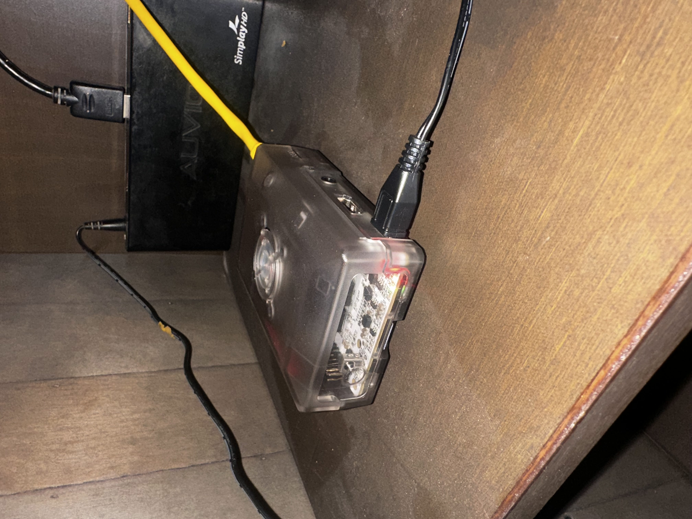
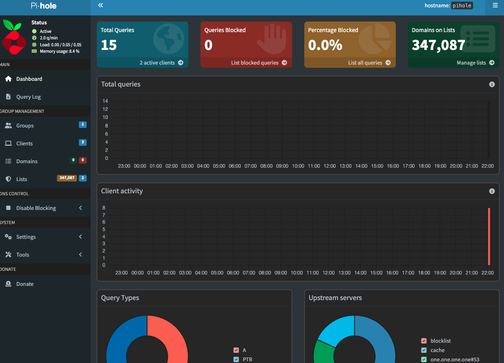

Pi-hole DNS Server
Built a network-wide ad and tracker blocker using a Raspberry Pi and custom enclosure, integrated directly into the home network.
Photos


Overview
In January 2026, I set up a Pi-hole DNS sinkhole on a Raspberry Pi and integrated it into my home network as the primary DNS server. Pi-hole intercepts DNS queries and blocks known ad-serving and tracking domains before they even load.
I also built a custom enclosure for the Pi to keep it clean and protected. The whole thing runs 24/7 and handles DNS for every device on the network, phones, laptops, smart TVs, everything.
How It Works
- Raspberry Pi acts as the DNS resolver for the entire home network
- Queries for known ad/tracker domains are blocked at the DNS level
- Pi-hole dashboard shows real-time stats on blocked queries
- Custom blocklists added on top of the defaults
- Static IP assigned so the router always routes DNS through it
What I Learned
- DNS fundamentals and how resolvers work
- Linux server setup and SSH administration
- Home network configuration (static IPs, router DNS settings)
- Hands-on Raspberry Pi hardware setup